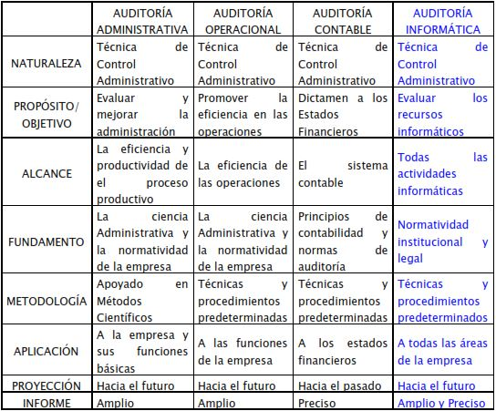

Auditoría de Sistemas
The time to act is now. We can protect, save, do something about it.

Semana 1
General de la Auditoría
Definición de Auditoría
La Auditoría en informática se refiere a la revisión práctica que se realiza sobre los recursos informáticos con que cuenta una entidad con el fin de emitir un informe o dictamen sobre la situación en que se desarrollan y se utilizan esos recursos. (José de Jesús Aguirre Bautista).
Clasificación de la auditoría
Tradicionalmente se consideran dos tipos de auditoría:
La auditoría interna la desarrollan personan que pueden o no depender de la entidad y actúan revisando, las más de las veces, aspectos que interesan particularmente a la administración, aunque pueden efectuar revisiones programadas sobre todos los aspectos operativos y de registro de la empresa, con el fin de emitir un informe sobre su revisión.
La auditoría externa, conocida también como auditoría independiente, la efectúan profesionistas que no dependen de la empresa, ni económicamente ni bajo cualquier otro concepto, y a los que se conoce un juicio imparcial merecedor de la confianza de terceros. El objeto de su trabajo es la emisión de un dictamen. Esta clase de auditoría es la actividad más característica del Contador Público o del Licenciado en Informática.
Objetivos de la Auditoría
Tipos de Auditoría
Auditoría a la Unidad Informática
Definición
“El examen completo y constructivo de la Unidad de Informática de una organización en los aspectos de Planeación, Organización, Operación, Control, Uso de Recursos (Humanos, Tecnológicos, Financieros y de Información) con el fin de descubrir deficiencias e irregularidades y proporcionar las recomendaciones necesarias para mejorar su servicio, funciones, condiciones de operación, y crecimiento. “
Auditoría a la Unidad Informática.
Auditoría a la Organización y Administración de la Función Informática.
Auditoría a los Procesos de la Función Informática.
Auditoría a la Seguridad de los Sistemas de Información en los aspectos de Integridad, Confidencialidad y Disponibilidad.
Auditoría al Desarrollo, Adquisición y Mantenimiento de Sistemas de Información.
Semana 2
La Planificación de la Auditoría
Fase preliminar o de contratación
El auditor analiza el alcance del trabajo a desarrollar y las posibles limitaciones, aceptando o rechazando el trabajo.
Encabezamiento: hace referencia al acuerdo llegado su alcance y duración, compromiso de entregar el informe e informar a los administradores
Responsabilidades y limitaciones de la auditoría: el auditor expone las limitaciones de la auditoría, propiedad de los papeles de trabajo y su confidencialidad
Responsabilidades y manifestaciones de los administradores:formular cuentas anuales, llevar libros de contabilidad, mantener una estructura de control interno adecuada, emitir la carta de manifestaciones etc…
Honorarios y facturación:criterio para fijar honorarios, importe, horas de trabajo etc…
Otros datos de interés:fecha de entrega del informe.
Fase de planificación
La planificación es la fase más importante del trabajo de auditoría porque en ella se deben preveer los pasos a seguir en su desarrollo
Para que sea eficaz debe cumplir unos principios:
Conocimiento de la entidad auditada y del entorno en el que opera para identificar las áreas más significativas.
Conocimiento del grado de fiabilidad y eficacia del sistema de control interno.
Control Interno
Conjunto de métodos y procedimientos establecidos por la dirección encaminados a la protección física, económica, jurídica y contable de los activos
En función de su finalidad
Controles de prevención destinados a asegurar que únicamente se reconocen y procesan transacciones válidas (segregación de funciones, autorización de transacciones, doble verificación de datos contables).
Controles de descubrimiento aquellos tendentes a proporcionar certeza de que se descubren los errores e irregularidades ( documentación prenumerada, inventarios y arqueos, conciliaciones bancarias, auditoría interna).
Estudio del sistema de control interno
Existen diversos métodos para estudiar los sistemas de control interno establecidos en una empresa, uno de los más utilizados es el método del cuestionario: consiste en obtener información acerca del SCI a partir de un cuestionario previamente elaborado por el auditor para cada áreas. Normalmente las preguntas se diseñan de forma que cada respuesta negativa suponga una debilidad. Se realiza al principio del proceso de auditoría.
Evaluación del SCI
La evaluación se realiza mediante las pruebas de cumplimiento que permiten al auditor comprobar, su existencia, su eficacia y uso continuado.
Pruebas de cumplimiento
Identificación de áreas significativas
Durante la fase de planificación, el auditor obtiene información que le permitirá detectar las áreas de trabajo más significativas, a las cuales deberá prestar más atención debido a:
Semana 3
E Perfil Del Auditor Informático
El auditor Informático es un profesional que debe tener un alto grado de calificación técnica y manejar perfectamente cualquiera de las corrientes organizativas empresariales actuales. Por lo que dentro de la función de auditoría informática, se deben contemplar unas características para mantener un perfil profesional adecuado y actualizado.
Características de un Auditor Informático
Las habilidades que un auditor informático consideradas son las siguientes:
Competencias Sociales:
Competencias de apoyo al crecimiento:
Competencias personales:
Semana 4
Establecimos diferentes sedes ubicadas en distintos continentes para una mejor comunicacion y de esa manera poder llegar estar en un mayor contacto con las personas interesadas sobre el tema y la conciencia en querer apoyar en esta causa la cual nos afecta a todos como seres humanos y de la cual somos los unicos capaces de encontrar una solucion a este gran problema y que con el tiempo tendra consecuencias mayores sino se logra actuar inmediatamente.
Marco Boedecker © 2020 - Todos los derechos reservados